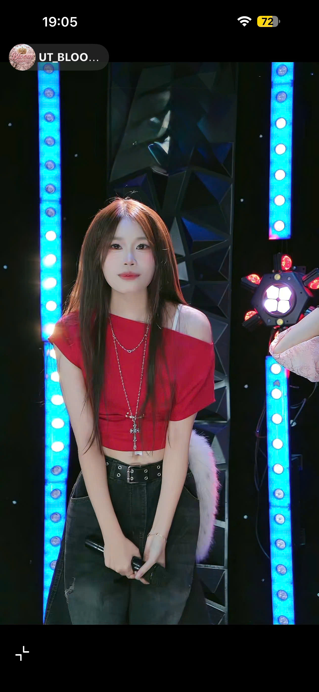

🌸 LAST DAY - UT BLOOM 🌸
Một hành trình khép lại... Nhưng những kỷ niệm sẽ còn mãi.

🌸 Hôm nay là ngày cuối cùng mà đại gia đình UT Bloom cùng nhau đồng hành. Có lẽ sau ngày hôm nay, mỗi người sẽ bước tiếp trên con đường riêng của mình. Sẽ không còn những buổi gặp mặt đông đủ, những lần cùng nhau làm việc, cùng nhau cười, cùng nhau áp lực rồi lại động viên nhau cố gắng vượt qua.
Thời gian ở UT Bloom tuy không quá dài nhưng lại đủ để trở thành một phần ký ức đẹp trong thanh xuân của mình. Mình thật sự biết ơn vì đã có cơ hội gặp gỡ tất cả mọi người. Cảm ơn những tiếng cười, những lần giúp đỡ nhau, những buổi trò chuyện tưởng chừng rất bình thường nhưng sau này sẽ trở thành điều khiến chúng ta nhớ nhất.
Mỗi người trong UT Bloom đều mang đến cho mình một bài học, một kỷ niệm và một giá trị riêng. Dù sau này chúng ta có đi đến đâu, làm công việc gì, ở thành phố nào, mình vẫn mong tất cả sẽ luôn mạnh khỏe, bình an, thành công và luôn giữ được nụ cười trên môi.
Nếu một ngày nào đó chúng ta vô tình gặp lại, hy vọng mọi người vẫn sẽ nhận ra nhau, vẫn có thể ngồi xuống cùng nhau, nhắc lại những câu chuyện cũ và mỉm cười vì đã từng là một phần của thanh xuân nhau.
❤️ Và có một người...
Có lẽ em sẽ không bao giờ biết, ngay từ những ngày đầu gặp em, em đã để lại trong anh một cảm giác rất đặc biệt. Không phải vì điều gì quá lớn lao, mà đơn giản là mỗi lần nhìn thấy em cười, anh đều cảm thấy ngày hôm đó trở nên vui hơn.
Anh từng rất nhiều lần muốn nói chuyện với em nhiều hơn, muốn được quan tâm em nhiều hơn, muốn hỏi em hôm nay có mệt không, có vui không, nhưng rồi lại chọn im lặng. Có những lời chưa từng nói, không phải vì không đủ chân thành, mà vì sợ nói ra rồi mọi thứ sẽ khác đi.
Có thể đối với em, anh chỉ là một người bạn, một người đồng hành trong khoảng thời gian ở UT Bloom. Nhưng đối với anh, em lại là một trong những điều đẹp nhất mà anh may mắn gặp được trong quãng thời gian ấy.
Cảm ơn em... Cảm ơn vì đã vô tình xuất hiện trong thanh xuân của anh. Cảm ơn vì những lần em cười, những lần em nói chuyện, dù chỉ là những khoảnh khắc rất nhỏ cũng đủ để anh nhớ rất lâu.
Anh không mong em phải đáp lại tình cảm này. Anh cũng không muốn tạo áp lực cho em. Điều anh mong nhất là em sẽ luôn hạnh phúc, luôn được yêu thương, luôn đạt được những điều em mong muốn.
Nếu sau này em gặp được một người thật sự tốt, anh sẽ chân thành chúc phúc cho em. Bởi điều anh thích nhất không phải là được ở bên em, mà là nhìn thấy em sống hạnh phúc.
Có lẽ đây sẽ là lần cuối anh viết những dòng này. Không phải để níu kéo điều gì, mà chỉ để trái tim mình không còn điều gì phải tiếc nuối.
Cảm ơn UT Bloom đã cho anh cơ hội được gặp mọi người. Và cảm ơn em... Vì đã trở thành một phần ký ức đẹp nhất trong tuổi trẻ của anh.
🌸 Tạm biệt UT Bloom 🌸
Hy vọng một ngày nào đó chúng ta sẽ gặp lại nhau,
trong phiên bản trưởng thành và hạnh phúc hơn.